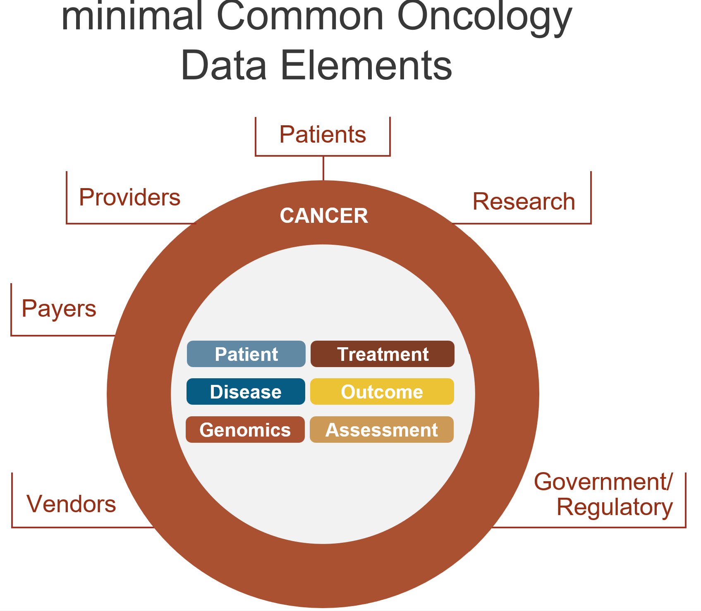

mCODE is a standard, FHIR Implementation Guide (IG) capturing a core set of common data elements for cancer that is computable, clinically applicable and available in every electronic health record for patients with a cancer diagnosis.
CodeX is a Member-driven HL7 FHIR Accelerator hosting a growing community working together to enable the needed to drive substantial improvements around the most important challenges health. Initial CodeX Use Cases (projects) focused on improving, collecting, and sharing mCODE-based data to improve cancer care and research.

Origin: The lucky spark was a chance encounter between former medical colleagues, Dr. Jay Schnitzer and Dr. Monica Bertagnolli, on an airplane in 2017. Bertagnolli was a preeminent cancer surgeon at Brigham and Women’s and was leading the American Society of Clinical Oncology (ASCO) and Alliance for Cancer Trials in Oncology (ACTO). Dr. Schnitzer, was Chief Technology Officer at MITRE, with a growing portfolio of health information technology research.
They had each been circling around one of the most fundamental root cause problems in healthcare: Lack of a single standard for collecting and sharing cancer patient data electronically. Drs. Bertagnolli and Schnitzer partnered to start a new data standard : the minimal Common Oncology Data Elements FHIR Implementation Guide (mCODE IG).
ASCO and MITRE, led by Drs. Bertagnolli and Schnitzer, became what we now call Champions. As Champions, they:
Vision: Drs. Bertagnolli and Schnitzer and an increasing number of additional partners envisioned data standards there were necessary and foundational for achieving a Learning Health System. In a Learning Health System, each interaction between a patient and clinician results in high-quality data controlled by patients and usable as each patient wishes by future caregivers, researchers, and others.
Champions shared a common vision, providing a framework for future action.
First Use Case: EHR Endpoints for Cancer Clinical Trials (ICAREdata study). This project aimed to capture and share, using the mCODE standard, high quality clinical treatment data within electronic health records (EHRs) that could be used for oncology research.
ACTO and MITRE became the ICAREdata Use Case Champions. Over time, multiple health systems, clinical trials, Epic, NCI and FDA participated in, hosted, and/or funded development and testing.
Initial focus was on standardizing and collecting just three key data elements (cancer type, disease status (e.g., progressing, stable...), reason for treatment change) all modeled within the fledgling mCODE IG.
ACTO, and MITRE understood that the best way to develop a cancer data standard is to focus on the small set of core data elements needed for specific Use Cases (e.g., specific challenges) that, if empowered by standardized data, could have a substantial impact.
ACTO and ASCO’s credibility and clinical network facilitated engagement of outstanding clinical experts and vendors.
Adoption and Value in real-world settings was in the Plan from the start. This ultimately helped refine mCODE and workflows and led to greater participation and substantial funding.
This Use Case also helped identify the skillsets necessary during different phases of Use Case work.
mCODE Design: The ICAREdata Use Case provided helped establish an approach and structure for mCODE (around patient, assessments, disease, treatment, outcomes, genomics), and design principles.
mCODE V 1.0 IG was balloted in the Health Level Seven (HL7) standards organization in 2019, and benefited substantially from the ICAREdata experience.
mCODE design principles that became clear during the ICAREdata Use Case included the following and have served mCODE’s evolution since [NOTE: See next slide]. Principles include: Focus on discrete data collect during patient encounters. Collect clinical input first and engage clinical experts as specific review points for the IG. Base the IG on government and industry requirements and trends (e.g., FHIR, US Core). Leverage the best existing clinical data modeling efforts. Adopt global standard code systems. (More details in this design principles table.

Cancer Data Summit: Interest in mCODE was starting to grow and new Use Cases were being proposed. A small group of leaders from across the oncology space (patients, providers, researchers, payers, gov’t agencies, vendors, etc.) convened for two days in October 2019 to brainstorm on the future of standardized cancer data, obstacles that could be prevent success, and next steps. [NOTE: see next slide] Support for creating a clinical requirements group (became the mCODE Executive Committee) and an implementation group (became CodeX). See below.
The Summit provided substantial benefits. Extremely useful feedback was provided by a diverse set of leaders. Noticeable alignment between diverse views happened during the two day event. Strategies for next steps were shared. Many who attended the Summit expressed interested in staying involved, and many of those became Champions and participants in the future mCODE Executive Committee and CodeX Community.
mCODE Executive Committee and Technical Review Group: This body was organized under the leadership of ASCO, and included clinical leaders and experts from major cancer-related societies, government agencies, and others as needed. The mandate continues to be to maintain and evolve the clinical description of the data elements in mCODE.
It has proven beneficial to have this strictly clinical group focusing on clinical requirements and interpretation. An expert can be an invaluable contributor to mCODE, without being deeply involved in the technical and logistical work of that CodeX would take on. However, a valuable, small subset of those involved in Executive Committee have joined CodeX work.
CodeX Community To complement the Executive Committee’s clinical leadership, MITRE led the creation of CodeX within HL7’s just launched Accelerator Program. CodeX was established, and still operates, with a focus on implanting FHIR IGs into software and workflows, testing these in the field, and supporting adoption and value measurement in the real world. A lightweight process, governance structure [NOTE: See slide 143] and Membership fee model [NOTE: See slide 144] were established. There were 9 Founding Members and other categories Members by the end of 2020.
Establishing the goal of adoption and value of a standard, rather than focusing primarily on standards development, was and is not easy. This generally takes a greater commitment of resources and time from more parts of the community to achieve the goal. However, this goal resonated with the growing community, and ultimately paid off in new Use Cases, Members, adoption and value in the real world.
Initial Vendor Implementation: Epic and others started to implement parts of mCODE in their software, and delivering to their customers.
Demand for mCODE from large cancer centers (through ASCO, ACTO and the Summit) contributed substantially to vendors responding to their customers.
CodeX Use Case Growth
CodeX setup a selection process for ensuring Use Cases have a higher probability of success. The table [NOTE: next slide] lists Use Case start dates and the Champions that drove them. Medical Societies and Government agencies were the most frequent Champions.
CodeX Membership Growth
Two main drivers for attracting new Members include initial promising progress within ongoing Use Cases, as well as new Use Cases which engage different segments of a given specialty (ex., the radiology segment of the oncology space). Successful Use Cases engaged at least one (preferably more) of each of the types of organizations needed to execute the Use Case.
| Start Execution | Cancer Use Cases | Community Champions |
|---|---|---|
| 2017 - 2018 | mCODE and CodeX Launch | ASCO, ACTO, MITRE visioning |
| 2018-19 | EHR Endpoints for Cancer Clinical Trials (ICAREdata) | ASCO, Alliance for Clinical Trials in Oncology (engaged Epic & multiple cancer centers) |
| 2019-20 | mCODE Executive Committee and Technical Review Group formed to provide clinical review of proposed new mCODE data elements
CodeX Accelerator launched to provide framework and governance for(initially) cancer mCODE-based Use Cases |
|
| 2020 | mCODE Extraction | MITRE |
| 2020 | Trials Matching | American Cancer Society/CAN (engaged multiple cancer centers & vendors) |
| 2020 | Radiation Therapy | American Society for Radiation Oncology, American Association of Physicists in Medicine (engaged: Epic, Varian, Elekta, other societies, cancer centers) |
| 2020 | Registry Reporting | Center for International Blood & Marrow Transplant Research, Centers for Disease Control and Prevention |
| 2021 | Prior Authorization | ??? [NOTE: not listed on the Prior Auth site] |
| Genomics (2 Use Cases) | HL7 Genomics Work Group, Kaiser [1st specialty beyond oncology] | |
| 2022 | Risk Evaluation and Mitigation | Food and Drug Administration |
| Cardiovascular (2 Use Cases) | University of Nebraska, American College of Cardiology, American Heart Association [2nd specialty beyond oncology] | |
| 2023 | Quality Measures | American Society for Radiation Oncology, Evernorth, Telligen |
In less than 5 years, the CodeX Community and other adopters have demonstrated the value of levering the mCODE standard for data collection and sharing to the point where all oncology stakeholders are seeing the it’s value and requesting it’s support from vendors. As of early 2024, there are numerous examples of mCODE’s success.

*Numbers are based on what the team has heard directly. There may be additional independent efforts adopting the CodeX FHIR standards
From Dienstmann et.al, multiple publications
Oncoclinicas Data: 3069 patients

Between 2019 and 2024, the CodeX Community and colleagues improved and leveraged mCODE to address difficult problems in oncology, substantially improving cancer care and research. The cardiology and genomics communities are starting their CodeX journey. For additional, new specialties considering following the mCODE / CodeX experience, here the five most important first steps to consider: